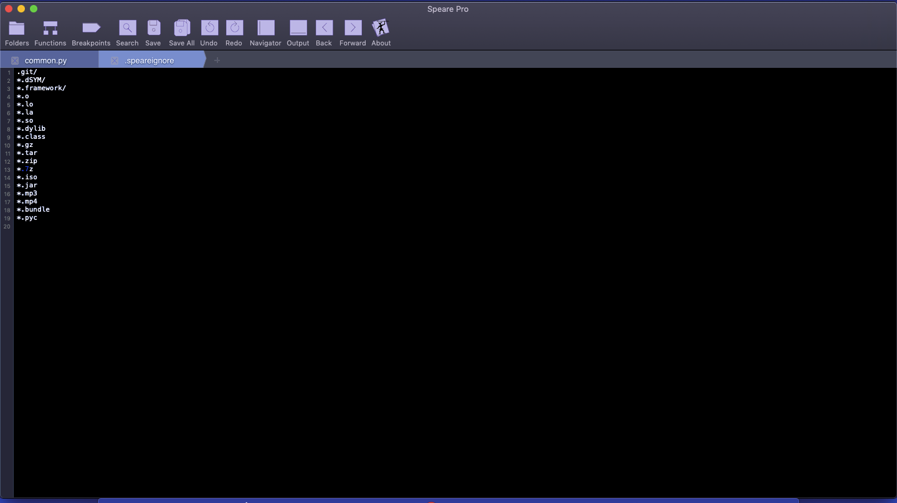
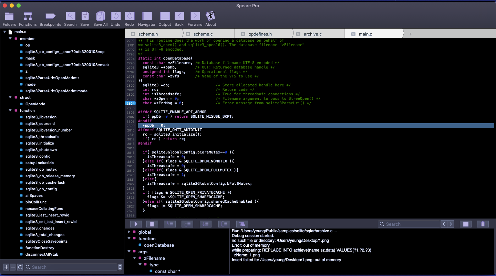
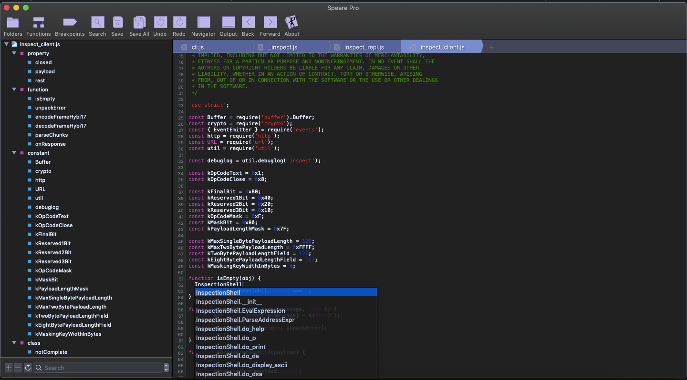
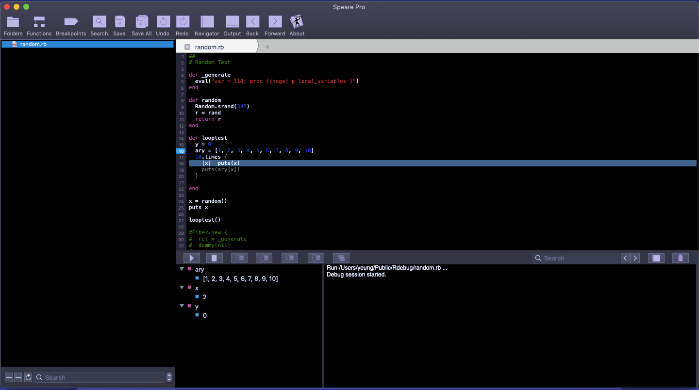

Speare v1.2.80 The free small IDE for scripting languages. (c) 2020 http://sevenuc.com
Speare code editor is a small, free and friendly code editor, and a really ultra light IDE. You can use it to edit all kinds of text file, programming and debugging with almost all common programming languages. It designed to make programming feels light, simple and free. Speare code editor not only has an efficient code navigation and call routines tracing ability but also has flexibility to extend the IDE to support special developing requirements and easily to add a new programming language in it. Speare code editor includes builtin debugging environment for C, C++, Ruby, mruby, Lua, Python, PHP, Perl and Tcl, and give you complete freedom to control and customise a debugging environment for any programming language.
The offline document: Speare_quick_reference.pdf
It's free!

If you can't open the link above, please launch App Store and found Speare by searching.
Please kindly donate the author by purchasing the pro version, your donation will drive us to continually improve it, or please recommend this app on your blog or rate this app so that helping other people can more easily find it.
What's new
1. Improvement of "Lite Mode", i.e. hide toolbar and left side TreeView, this is useful and feels more light when open and edit several file but not work on a project that has large number of files. This function turn Speare to a TextEdit-like text editor but has more features, such as line number display, syntax highlighting etc.
2. Highlighting files that has no extension name by recognise its Shebang, i.s. the first line of the text file.
Code editor and IDE on macOS
Terminal based on text editors such as GNU Emacs and Vim, although they are very cool, but their limitations are also obvious, the elephant in the room. TextMate is my favourite code editor long years ago and until today, but it still lack some features. As a programmer, so many IDE and text editors I've used in the past years, such as the bulky cargos, Visual Studio Code, Atom, Android Studio, Eclipse, ActiveState Komodo, Xcode, and some light cargos, e.g Textadept, CotEditor and TextMate. I never like the bulky cargos, e.g desktop applications that built with NodeJS, React and Electron, Eclipse and Java or .NET and C# based big stuffs. Speare code editor is a small, free and friendly code editor which implements the most important missing features in common code editors, e.g bookmark management and fast locate code lines between multiple files, code block live parsing etc.
| No. | Code Editor | Size | No. | IDE | Size |
| 1 | Speare 1.2.56 | 5.6MB | 5 | Visual Studio Code (bare system) 1.36.1 | 211MB |
| 2 | TextMate 1.5.7 | 23.3MB | 6 | ActiveState Komodo 11.1 | 334MB |
| 3 | Textadept 10.4 | 35MB | 7 | Atom 1.38.2 | 558MB |
| 4 | CotEditor 3.3 | 47MB | 8 | Android Studio 3.1 | 1.37GB |
| 9 | Eclipse IDE 4.12 | 400MB~5GB | |||
| 10 | Xcode 10.0 | 12GB |
The technology choices to make a code editor and IDE on macOS
| No. | Name | Pros | Cons |
|---|---|---|---|
| 1 | Vim/Emacs | Fav of big community | User experience is not so friendly |
| 2 | HTML5 + Electron | Mature code base open sourced | Low performance with huge run-time |
| 3 | Qt | Mature cross-platform GUI kit | Best for Linux, Windows but not suitable for macOS GUI app |
| 4 | GTK+ | Mature cross-platform GUI framework | Best for Linux but not suitable for macOS GUI app |
| 5 | Tcl/Tk | Rapid GUI app development kit | Lack low level native OS support features |
| 6 | Java Swing | Rapid development, mature cross-platform GUI kit | Low performance with huge run-time |
| 7 | C# + .NET | Fast implementing GUI app | Best for Windows but not suitable for macOS GUI app |
| 8 | Native Cocoa | Mature, reliable, high performance | Best frameworks to build macOS app |
Speare code editor was developing based on the native pure Cocoa frameworks with leveraging several C library results a very small footprint, high performance, small memory and storage runtime consuming, and ultra small distribution. Only 1.1MB executable!
Why not big software?
Waste time to maintain, wast big storage and runtime memory, waste power, waste time to upload and download. It's waste people's life! Every desktop developer should known one thing, the embedded system developers sometime even fighting for one byte of storage in some situation. They never think about memory and storage like embedded system developers, so more and more big monster there. In today's software industry, Unix philosophy has been throw away completely!
They make software as big as possible, as complex as possible, but I believe in the opposite philosophy.
Why another code editor and IDE on macOS?
Although there are so many code editor and IDE available on macOS, but three feature of Speare code editor can make it unique:
Lightweight. Most of them are very heavy, bulky, but Speare code editor is really really ultra light. Only 6.2MB!Cost. Most of them are very expensive, but Speare code editor is free! Of course, you can kindly purchase the pro version to donate some money to the author, but that is not mandatory.Freedom. Feels light, simple and free, high performance code editor, flexibility to extend the IDE to support special developing requirements and easily add a new programming language to it, most of the IDE on macOS can't give you such ability and freedom. In fact, Speare code editor give you very flexible control to extend it and add a debugging environment for any programming language.
Crafting software as small as possible. → Why C is the returned king of programming languages.
Screenshot



Features
- Well designed user operation interface. Intuitive and simple.
- High performance of managing large amount of files and big files.
- Fast search and replace in current document, selected folder, opened files and entire project.
- Smoothly edit multiple files that written in different programming languages simultaneously.
- Supports almost all common programming languages syntax highlighting and parsing.
- Auto-completion, sensitively typing with keywords, live parsing symbol definition with priority.
- Jump to definition and fast locate code lines between editing files by symbol index, bookmark or searching.
- Unlimited go back and forward, automatically remember jump location and current editing locations.
- Keeping entire state after quit, the opened files, selection of each file and the cursor location.
- Fonts and colours customisation, supports self-defined schemes.
- Full featured markdown editor, run Javascript code instantly, well support Web development.
- Code block selection by double clicking the begin symbol of code block.
- Run syntax checking and editing code instantly.
- Preview all kinds of files, image, pdf, office documents, audio and video etc.
- Ultra lightweight.
Code browser, call routines tracing and code analysis
Speare code editor helps end user to understand an existing code base by powerful code browser and call routines tracing functions. Speare code editor parses source code files and maintains the database of symbol definitions instantly while user editing, and presents useful contextual information to user automatically. It also use persistent bookmarks to remember key locations within functions or classes and their references. End user can quickly navigate function calls and callers and find references to variable, function or class instantly.
File Organisation
1. Add File or Folder in Workspace
a. Drag file or folder from Finder into Treeview directly.
b. Click "+" symbol on the bottom of Treeview.
c. Create temporary document:
d. Click menu: File → Open Recent.
e. Add file or folder in a particular folder: right click the folder, on the popup menu → "Add File or Folder".
f. Create a new file or folder in a particular folder: right click the folder, on the popup menu → "New File" or "New Folder".
(Input file or folder name and then click anywhere outside of the input box to close it.)
g. Reload a particular folder: right click the folder, on the popup menu → "Relod".
2. Remove File or Folder from Workspace
a. Select a file or folder, click "-" symbol on the bottom of the Treeview.
b. Right click a file or folder, on the popup menu → "Remove".
c. Use shortcut key "Option + Shift + R" to do the removing.
d. Click menu: File → Remove.
3. Delete File or Folder to Trash/Bin (
a. Click menu: File → Delete.
b. Right click a particular file or folder: on the popup menu → "Delete".
c. Use shortcut key "Command + D" to do the deleting.
Refresh Symbol List or Bookmark (Breakpoint) List
Click toolbar "Functions": function definitions of current file will be re-parsed and represented in left side Treeview.
Click toolbar "Breakpoints": all breakpoint (bookmark) of current file will be re-loaded in the left side Treeview.
Auto-completion Selection
Type in class name, function name, or variable name or anything else, wait one to three seconds and use Up and Down arrow key to move selection in the candidates and click "Return" key to select one.
SPP File
SPP File is the abbreviation of "Speare Project Plist" file, it is the project file type of Speare that has an .spp file extension, it packs variant of project meta information together, including project folder and its bookmark/breakpoints, watches, opened tabs, selection of each tab, current selected tab etc.
- Create SPP File
Click menu: File → Save as Speare Project file. This operation will store the root path of the nodes in the left side Treeview as a .spp file. - Open SPP File
Directly dragging the .spp file into Treeview, or select menu "File" → "Open", will load all indexed file and folder stored in the .spp file into the left side Treeview (Workspace Explorer).
 When switch to another project, it is necessarily required to save current project so that the project meta information stored in .spp file and can be restore later otherwise these information will lost!
When switch to another project, it is necessarily required to save current project so that the project meta information stored in .spp file and can be restore later otherwise these information will lost!
Search and Replace
- Search Current Document:
a. Use the shortcut key "Control + F" to do the searching just like in TextEdit.
b. Click search button on the toolbar and on the prompt dialog select "Current File". - Search Current Folder:
Click search button on the toolbar and on the prompt dialog select "Current Folder". - Search Opened Files:
Click search button on the toolbar and on the prompt dialog select "In Opened Tabs". - Search Entire Project Folders:
Click search button on the toolbar and on the prompt dialog select "In Entire Project". - Searching by Index:
a. Click symbol button on the toolbar and select items that parsed by the build-in syntax parsers.
b. Click breakpoint button on the toolbar and select items that placed as bookmark or breakpoint.
- Searching items in left side Treeview:
Input the item name (or prefix or suffix, or contained word) in the search field which located in the bottom of the left side Treeview and then enter "Return" key, click up and down arrow right side of the search field to iterate items.
Tab Selection and Dragging
Speare use tabs to manage multiple opened files on the right side, continuously click on the leftmost or rightmost tab can quickly scroll tabs to left side or right side so that opened files can be quickly switched. Dragging special tabs together will also can help simultaneously editing multiple files.
Tips: click tab can fast select the node of left side Treeview when it loaded or reloaded end.
File Rename and Save
1. File Rename
Click the item in the left side Treeview and input a new file name just like in Finder, and then click the left side icon to end editing.
2. File Save
a). Speare can save file automatically whenever it be edited but the temporary "Untitled files" will be asked to save when quit the app or load a .spp file, because load a .spp file will remove current project.
In addition, Speare will change the icon colour of the item in the left side Treeview to indicate that it has been edited whenever it be edited, and will restore to default state when click the "Save" or "Save All" button on the toolbar.
b). Speare can save file with user selected text encoding and compatible with Windows line endings (i.e "\r\n").
Jump To Definition
Ensure the keyword selected and then right click one of the popup menu items. Speare provides all location where the symbol defined including header file and implement file.
Bookmark & Breakpoint
1. Add: click the line number.
2. Toggle: click on the marker, its colour will changed to dark or light, dark colour means breakpoint in debug mode.
3. Delete: right click on the marker → on the prompt menu, select "Remove".
Show in Finder
Right click the item in the left side Treeview (Workspace Explorer) and then click the prompt menu.
Insert full path of current file
a. Click menu: File → Insert Full Path.
b. Use shortcut key "Option + Shift + I" to do the work.
Back and Forward
Just click the "Back" or "Forward" button on the toolbar to switch different edited location in a same file or switch between the files that was being editing.
File OverWrite and Refresh
When you overwrite a file in Finder, Speare will ask you to reload it, you should save this file manually if you click "Cancel". You can also click the "Refresh" button on the bottom of the left site TreeView to reload the entire project, it may take a while to complete the loading for big project. When you overwrite, rename, add or delete a file or folder in Finder, please right click its parent folder in the left side TreeView and click "Reload" on the popup menu.
Syntax highlighting without file extension name
Speare can recognise the programming language of a text file without file extension name by Shebang, i.e, the first line of the text file. The configure file for this function is "/Applications/Speare.app/Contents/Resources/shebang.json", the default language includes Shell, Ruby, Python, Perl, Lua, PHP and Tcl, you can edit it to support more programming languages directly.
Colour Picker
Right click current editing file → select "Colour Picker" on the prompt menu, then a HTML colour will be inserted when pick a colour.
Customise Font and Colour
Click menu item "Preferences" and then set font and colour of editor background etc.
Note: Change cursor colour requires restarting the application to take effect.
Add a new colour scheme:
Put you customised colour scheme in the following directory:
~/Library/Application Scripts/com.sevenuc.SpeareHelper/colorschemes
Please create the directory if it is not exists.
Markdown & HTML
1. Preview: select menu "View" → "Preview", see html or markdown file rendered in builtin web browser instantly.
2. Close Preview: select menu "View" → "Close Preview", close the opened builtin web browser.
3. Save Markdown: select menu "View" → "Save Markdown", save the generated html to local file, Speare has a builtin converter that can convert markdown to html instantly.
Note: a. supported file extensions: .htm, .html, .md, .mdown, .markdown.
b. click any file item in the left side Treeview will also close preview automatically.
Code Formatter
Supported languages:
a. C, C++, Objective‑C, C#, Java (builtin support).
b. Ruby, Lua, Python, Perl, PHP, Tcl, JavaScript, Shell scripts, Dart, Go, Rust.
(located in the formatters directory, and requires some modification to correctly working.)
Location of formatters:
If the formatters has not installed, in the prompt dialog, select subfolder "com.sevenuc.SpeareHelper" and then click "Install Code Formatters" button. This directory contains various code formatter (aka. code beautifier) that used to indent and format code block for Speare code editor.
The rule of formatter is:
Speare code editor will give up formatted code block if there's something printed in stderr or nothing printed in stdout otherwise anything printed in stdout will be used to replace the selected code block.
Ensure the formatters correctly working, you should take a look at above directory, especially modify the shell script to match the path of executables (install interpreter or missing component), including:
Note: The selected code block is complete or has logical begin and end border then the formatter can generate better output.
Lite Mode
Click siding button on toolbar and then click menu "View → Hide Toolbar".
"Lite Mode" can turn Speare to be a TextEdit-like text editor but has more features, such as line number display, syntax highlighting etc. "Lite Mode" can be remembered and continually keeping, it can be turned off by click menu "View → Show Toolbar". This function is useful and feels more light when open and edit several files but not work on a project that has large number of files.
Debug Mode
Speare seamlessly support debugging C, C++, Ruby, mruby, Lua, Python, PHP, Perl and Tcl script, more info see here: → Speare debugger architecture.
File and Folder Filter
1. Click menu: View → Don't Show Hidden Files. Hide or display all hidden files.
2. Speare code editor uses a file named as
dist/
build/
.git/
.svn/
.hg/
CVS/
.deps/
.libs/
prefix+*/ (ignore directory name with prefix)
*+suffix/ (ignore directory name with suffix)
*+word+*/ (ignore directory name contains word)
...
# 2. exclude directories by full path (
/xxxx/xxx/xxx/data/
/xxxx/xxx/xxx/xxx/resource/
...
# 3. exclude files by specified extension.
*.o
*.lo
*.la
*.so
*.class
*.gz
*.tar
*.zip
*.7z
*.iso
*.jar
...
(
# 4. exclude files by file name.
.DS_Store (already ignored by builtin function)
someFile
someOtherFile
prefix+* (ignore file name with prefix)
*+suffix (ignore file name with suffix)
*+word+* (ignore file name contains word)
...
# 5. exclude files by full path.
/xxxx/xxx/xxx/someFile
/xxxx/xxx/xxx/xxx/someOtherFile
...
a. Line starts with '#' is comment.
b. Each line contains a match rule to ignore directory or file.
3. Create or edit
Download this sample ignore file from here: → speareignore.txt.
Note:
a. The ignored directory and files will not be parsed and their symbol definitions will not be indexed in background.
b. When overwrite file or folder in Finder, they will not be asked to reload if they were set to be ignored (deprecated).
c. You can directly edit file .speareignore in Speare code editor and right click the project folder and then click "Reload" on the popup menu.
Warning: File system monitor have been removed from version 1.2.38, please right click the particular folder to "Reload" it when you made file system changes in Finder.
About MATLAB source code
Please convert file extension name from .m to .mat to prevent conflict with objective-c files, to accomplish that, please download a simple perl script from here: rename.pl (2KB), and execute:
About Dart programming language
Speare code editor uses extra component to parse and index Dart source code and format code block, please download the parser from here: dart_parser.tar.gz (2.8MB), and following readme.txt in it to configure it to working with the editor.
SHA256: c7499102bce7ae36ceb6679e858a059ce7b2c927428569667139c6cc4da9fee3
About Praat scripting
1. Please download the syntax highlighting file (Praat.plist.zip) for Praat scripts, and put it under
2. Open
...
<key>Swift</key>
<array>
<string>swift</string>
</array>
<key>Praat</key> <---- Praat.plist (file name for syntax highlighting)
<array>
<string>praat</string> <---- file extension name
</array>
</dict>
</plist>
Add a New Programming Language
Download the guide from here: language_extension_protocol.pdf, and following the description to add a new programming language code runner, parser, syntax highlighting, code formatter and debugger in Speare code editor.
Syntax Checking and Run Code Instantly
a. Press shortcut key "Command + R".
b. Click menu: File → Run External Command.
Location of the shell scripts for the external commands:
~/Library/Application Scripts/com.sevenuc.SpeareHelper/commands
This is a common interface that enables end user to run code for various of tasks immediately, usually includes syntax checking, unit test, and run code snippets.
You can put different of shell scripts in this directory to instantly run other tasks, such as automatic compile (run makefile or CMake etc), building and packing, or run static code analysis tool (source code analyzer, such as PC-Lint, clang-analyzer, PHPLint etc), and any other tasks. Speare code editor determine which shell script should be called by the extension name of the source code files. One shell script service for one programming language. Every script can accept two input parameters, the full path of the current selected file and the selected code block, and the last parameter is optional and can be empty string.
#!/bin/bash # $1 is the path of the current selected file # $2 is the selected code block (optional) ruby $1
The above is a sample shell script that accepts a file as input parameter and run it, if there's some syntax error, the error message will be printed in the debug output (the black area on bottom right ). Please execute "chmod +x" to ensure the script is executable. Speare code editor will merge stderr and stdout together and print them in the debug output.
The map between the source code file extension names and the entry shell script name:
c.sh: *.c cc.sh: *.cc, *.cxx, *.cpp, *.c++ ruby.sh: *.rb lua.sh: *.lua python.sh: *.py perl.sh: *.pl php.sh: *.php tcl.sh: *.tcl js.sh: *.js sh.sh: *.sh (shell script) go.sh: *.go rust.sh: *.rs dart.sh: *.dart
TO add a new programming language and associate its source code file extension names with an entry shell script, please refer this document: language_extension_protocol.pdf.
Note: Don't use this approach to run long running tasks but should launch Terminal.app to do such works.
Important Tips
1. Please wait a while when loading very big project into Workspace.
2. Use ESC key or arrow key or 'Control+Z' to get out of suggested words list selection.
3. Please ensure all source code file and resource files have been dragged in the left side Treeview (Workspace Explorer) before start a debug session, because macOS app can't be allowed to access files outside of its sandbox.
4. When your project sub folder moved to another place, please drag the project folder in Speare again to ensure the debugging can correctly work.
FAQ
1. How to add keywords highlighting to support a new document type?
a). Open
...
<key>Swift</key>
<array>
<string>swift</string>
</array>
<key>GDL</key> <---- GDL.plist (file name for syntax highlighting)
<array>
<string>gdl</string> <---- file extension name
</array>
</dict>
</plist>
b). Download GDL.plist and put it under the following folder:2. How to add syntax highlighting to support a new file type?
Open
<key>F# - OCaml</key> <---- file name for syntax highlighting
<array>
<string>ml</string> <---- file extension name
<string>mli</string> <---- file extension name
</array>
3. Syntax highlighting for a new programming language:
a). Append the file extension names of the programming language in the "FileExtensions.plist" as described in the above section.
b). Put the syntax highlighting definition file in the following directory:
Please create the directory if it is not exists.
4. How to add a missing keyword to enable syntax highlighting in Speare?
Open
<key>keywords</key>
<array>
<string>missing keyword</string>
...
5. How to add "Open With" in Finder to support open a file type with Speare?
Right click the file in Finder → Get Info → Open With: Other..., find Speare.app and select, and then Click
6. How to clean hidden file and folders used by version control systems?
download a simple python script from here: cleanfolder.py (5KB), and execute:
7. How to do file compare and directory compare?
Generate a diffs file with two directory or two file that allow you compare changes line by line and then open the generated changes.diff in Speare Code editor.
Programming Languages and Document Types
AMPL ASM ASP
Support
If your special programming language, compiler, interpreter or special document type requires Spear syntax highlighting or debugging support, please drop us a message.
Please kindly report your feature request or issue on OSDN or Github:
 https://osdn.net/projects/speare.
https://osdn.net/projects/speare.
 https://github.com/chengdu/Speare.
https://github.com/chengdu/Speare.